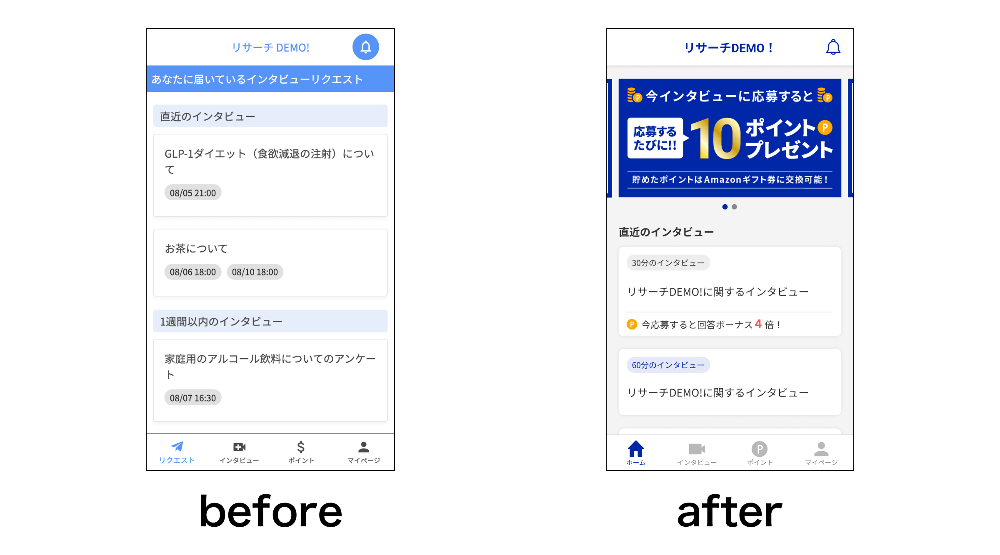
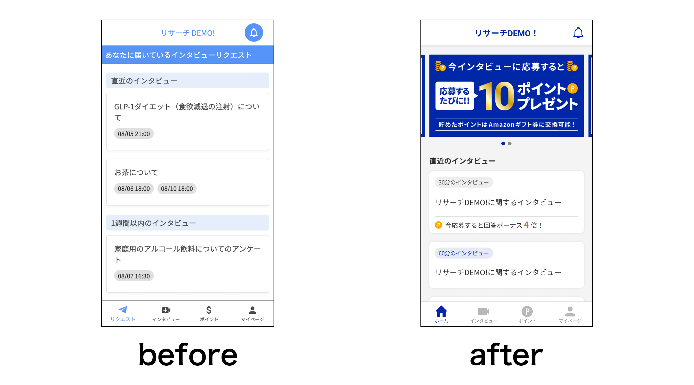
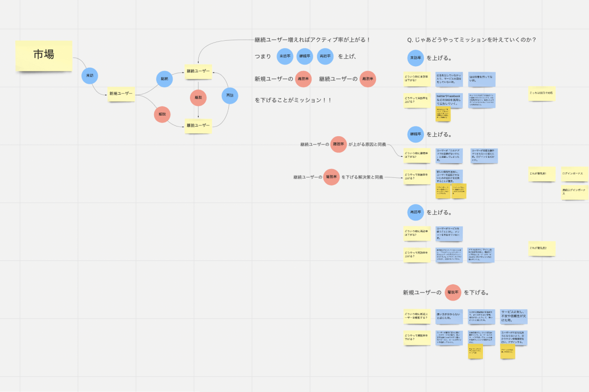
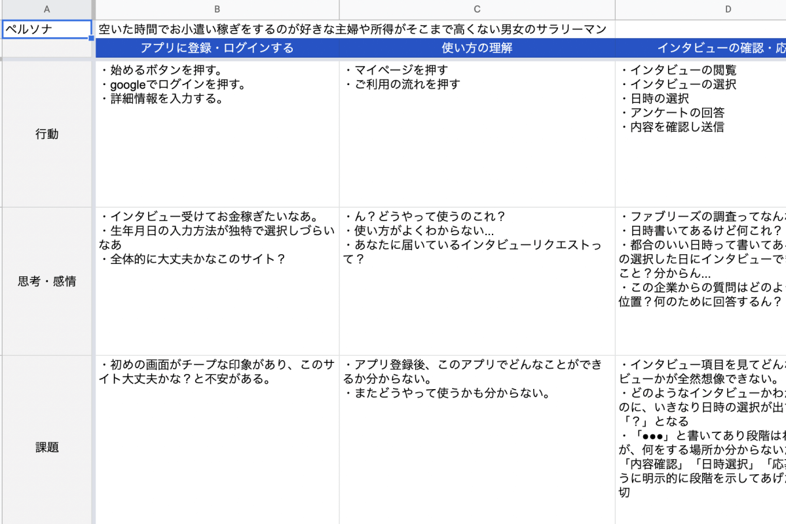
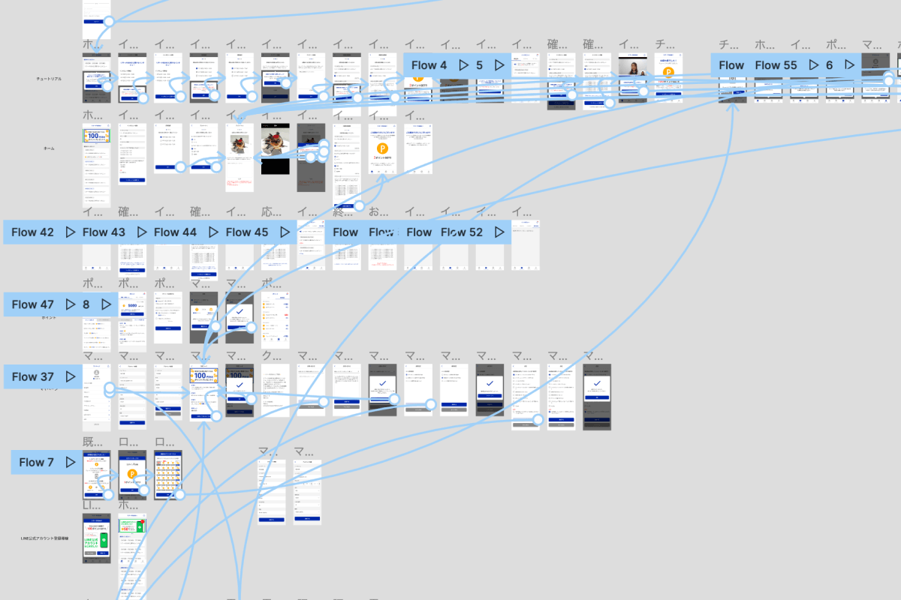
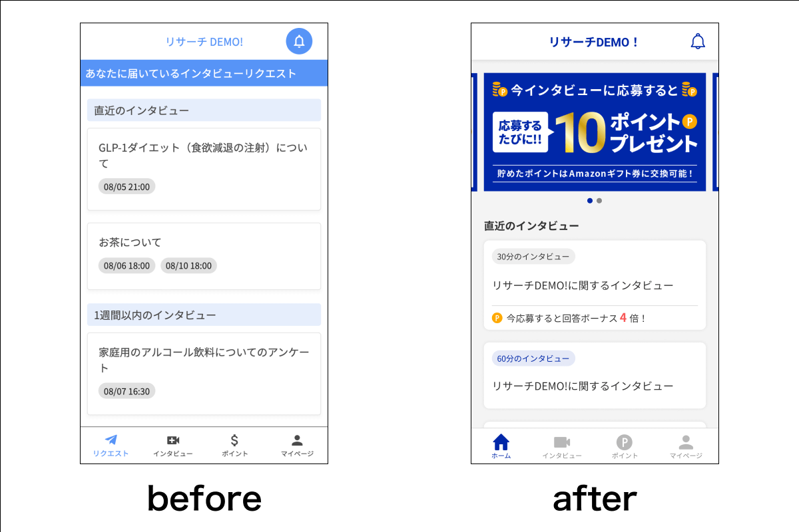
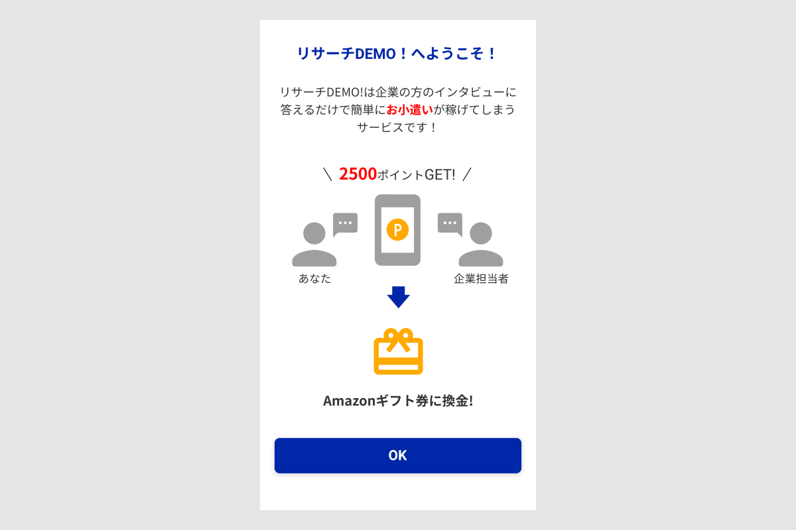
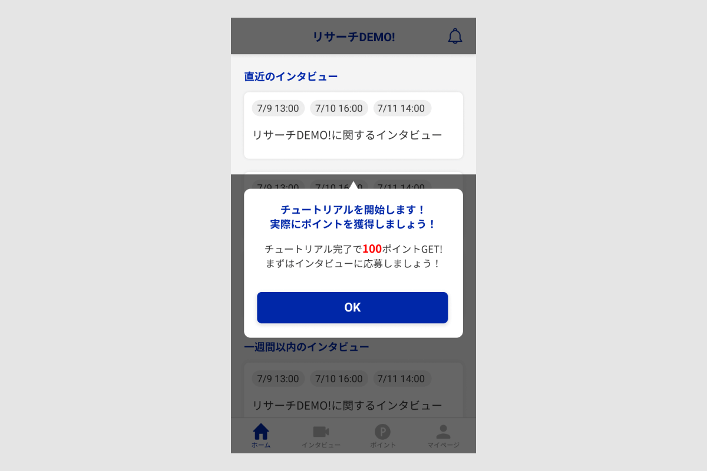
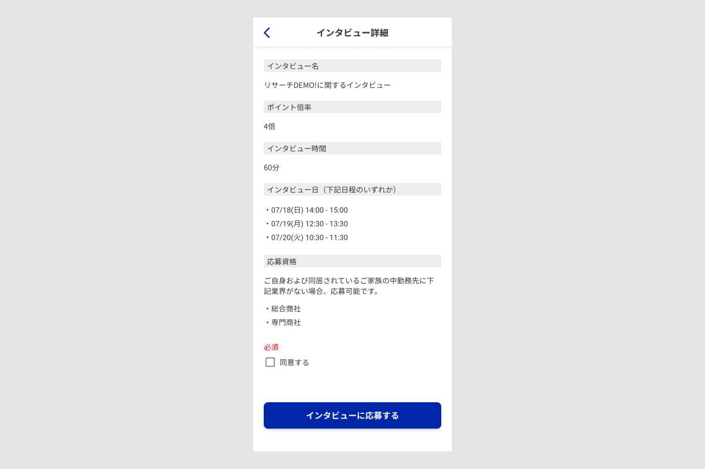
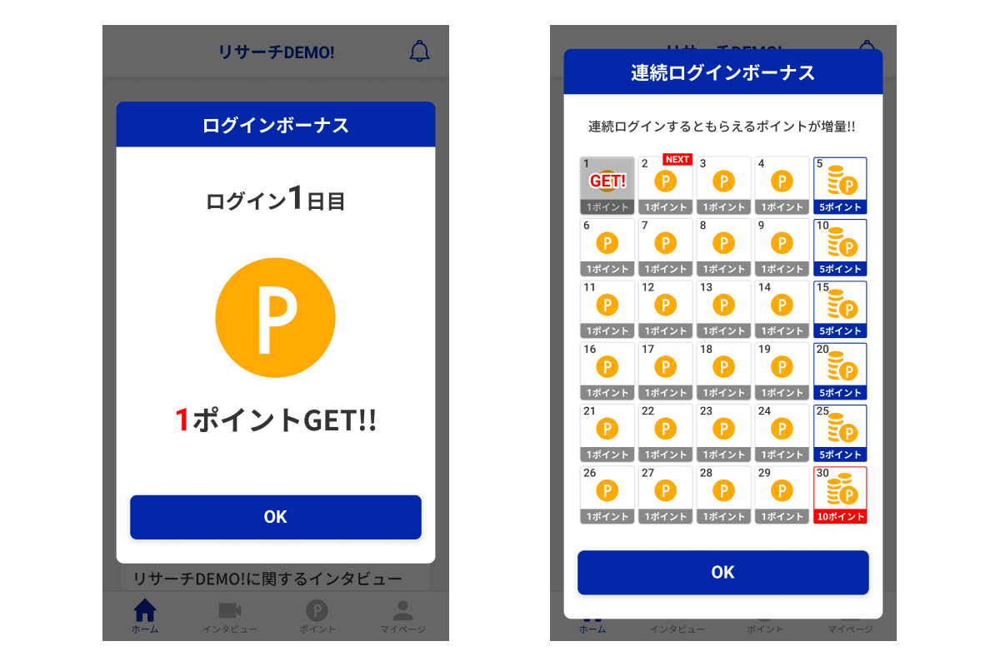

KYOSUKE TSUKAMOTO
works
「リサーチDEMO！」消費者側Webアプリのフルリニューアル
-
SOFTWARE
-
-
SEASON & TIMES
-
-
MEMBER
-
サービス紹介ページはこちら
 

-
リサーチDEMO！とは
リサーチDEMO！は企業からのインタビューにオンラインで参加するとで謝礼が貰えるサービスです。
-
プロジェクト概要
株式会社Marketing Demoが運営するサービス「リサーチDEMO！」の消費者側webアプリのリニューアルに携わりました。そのうち既存アプリの課題整理から要件定義、デザイン作成全般を担当いたしました。
-
課題・背景
・会員登録後、どんなことができるか分からない。また、どうやって使うかも分からない。
・応募するインタビューの詳細が分からないので、応募しても大丈夫か不安。
・ユーザーの「インタビュー応募」などのアクティブ率が悪く、企業が求めるユーザーとマッチすることができない。
・サイト全体でチープな印象があり、このサイト大丈夫かなと不安がある。 -
意図・目的
・利用開始時にどんなことができるサービスでどのように使ったら良いか理解できるようにする。
・インタビューの詳細を確認できるようにすることで、ユーザーの不安を取り除き応募のハードルを下げる。
・ユーザーのアクティブ率を向上させ、企業とのインタビューの機会を増やす。
・一貫性のあるデザインのプロダクトとし、ユーザーを安心させる。
開発プロセス
-

miroでアクティブ率の向上には、サイトの「来訪率」「継続率」「再訪率」の向上、「離脱率」の低下が必要であると分析しました。
その中で「継続率」の向上を第一目標に置き、ユーザーにサービスを継続して使ってもらうためのUX設計を行いました。 -

カスターマージャーニーマップを用いて、サイトを回遊する中での現状の課題や解決策を洗い出し、企画側、エンジニア側と共にディスカッションして要件定義を行いました。
-

要件定義を元にアクティブ率の向上させるための既存機能の改修、新規機能の作成を行いました。
改善点
-

企業とのインタビューのため、配色を濃い青色にし信頼度を高め、チープな印象を払拭しました。
また、堅い印象になりすぎぬよう差し色に黄色を用いることで、ユーザーに快適に使用してもらうよう工夫をしました。 -

新規会員登録後にどんなことができるサービスなのか理解できるように、サービス説明のページを作成いたしました。
-

新規会員登録後、チュートリアルの実施を促すことで、どうやってサービスを使っていけば良いか理解できる仕組みを作りました。
-

インタビュー応募時、インタビューの詳細ページを挟まず、インタビュー候補日を選択する導線となっており、ユーザーがどんなインタビューか応募前に理解できなかったため、詳細ページを作成し、応募前にユーザーインタビューの概要を理解できる設計にしました。
-

既存ユーザーが継続してアプリを使うきっかけを生み出すために、ログインボーナス機能を作成しました。また、連続でログインすると追加でボーナスがもらえる設計とすることで、継続してログインしてもらうための仕組みを作りました。